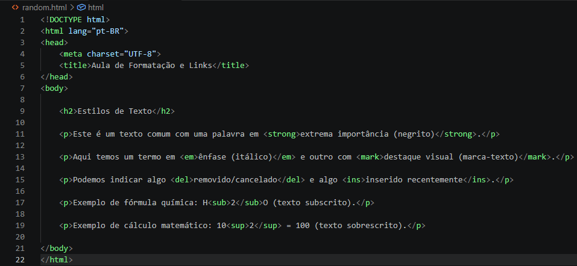
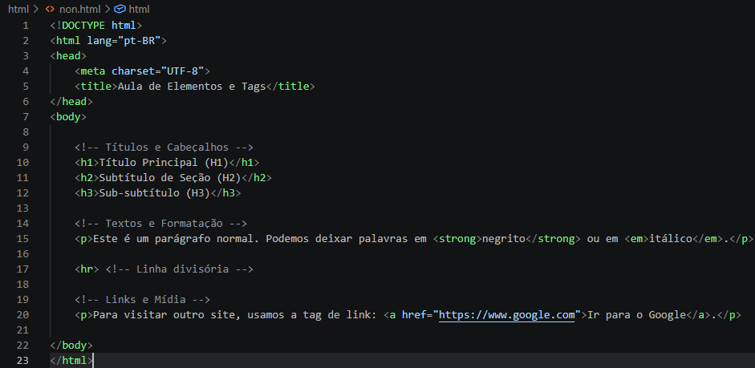

Formatação de Texto e Links
Com a estrutura básica e os conceitos de tags assimilados, o próximo passo essencial é dar vida ao seu conteúdo. Nesta aula, você aprenderá a formatar textos para dar destaque, estilo e hierarquia visual, além de conectar sua página ao resto da web por meio de links (âncoras).
Formatação de Texto
No HTML, a formatação de texto não serve apenas para alterar a aparência visual — ela também transmite significado semântico aos navegadores, leitores de tela e buscadores como o Google.
Exemplo Prático de Formatação

Criando Links (A Tag <a>)
Os links são a espinha dorsal da World Wide Web. A tag usada para criar um link é a (de anchor ou âncora). Ela sempre precisa do atributo href (referência de hipertexto) para definir o destino do clique.
-
Link Externo (Para outros sites)
Para direcionar o usuário para um site fora do seu: <a href="https://www.google.com">Acessar o Google</a>
-
Abrindo Links em uma Nova Aba
Por padrão, o link abre na mesma janela, substituindo a sua página. Se quiser abrir em uma nova aba, adicione o atributo target="_blank": <a href="https://www.wikipedia.org" target="_blank" rel="noopener noreferrer"</a> Visitar a Wikipedia em uma nova aba, Sempre que utilizar target="_blank", adicione rel="noopener noreferrer" para proteger seu site contra vulnerabilidades de navegação.
-
Links Internos (Entre páginas do seu próprio site)
Se o seu site tiver várias páginas na mesma pasta (como sobre.html ou contato.html), você faz a ligação apontando diretamente para o arquivo: <a href="sobre.html">Conheça nossa História</a<
-
Link para Endereço de E-mail ou Telefone
Você também pode criar links interativos para ações do dispositivo do usuário: <a href="mailto:contato@meusite.com">Enviar um E-mail</a> , <a href="tel:+5511999999999">Ligar para o Suporte</a>
Tags Principais para Conteúdo
Veja como usar as tags mais comuns no dia a dia do desenvolvimento:

Clique aqui para ver mais informações
Dica de gold: Não use a tag <a> sem o atributo href, pois sem ele o navegador não entenderá que aquele texto é um elemento clicável. E lembre-se: o texto dentro do link deve ser claro e descritivo (evite usar apenas "Clique aqui").
Dicionário Rápido de Tags
| Tag | Descrição | Exemplo de Resultado |
|---|---|---|
<strong> |
Importância forte (negrito) | Texto em destaque |
<em> |
Ênfase no texto (itálico) | Texto enfatizado |
<mark> |
Texto marcado/realçado | Texto destacado |
<del> |
Texto deletado ou riscado | |
<ins> |
Texto inserido ou sublinhado | Texto inserido |
<sub> |
Texto subscrito (abaixo da linha) | H2O |
<sup> |
Texto sobrescrito (acima da linha) | X2 |
<a href="..."> |
Link/Âncora para navegação | Clique aqui |